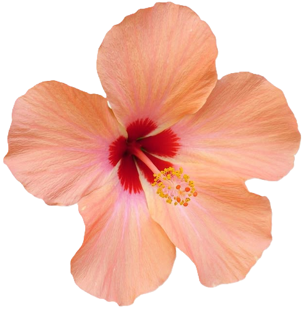
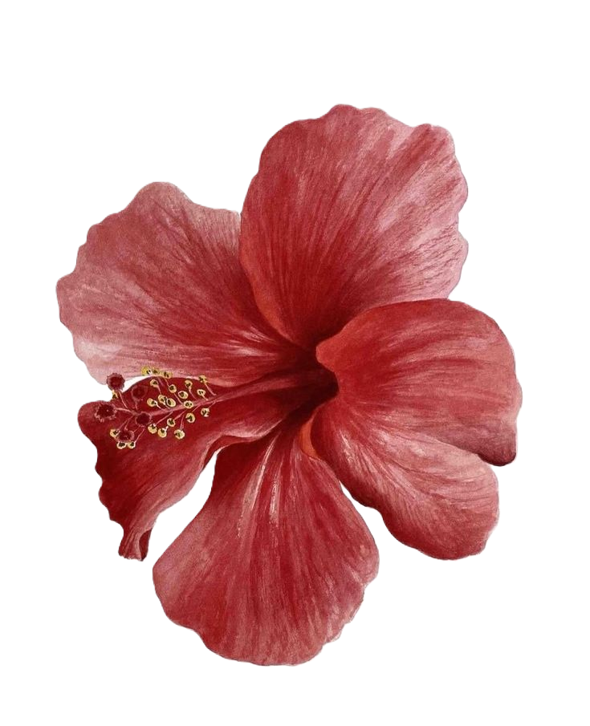

Education

Projects

Hobbies

Skills
Contact Me
Sorbonne University, Paris
These degrees are taken simultaneously at Sorbonne University, Paris. I've taken courses on Data Structures, Network, Algorithms for the CS Degree. On the Literature side, I have studied Comparative Literature, Stylistics, Supports de l'écrit and writing courses. I passed year one with an average of 15.96/20 and year 2 with an average of 14/20. 12.96/20 first semester of year 3.
I am currently undertaking the last semester of year 3 at the University of Aberdeen in an Erasmus exchange.
Epin Private High School, Vitry-sur-Seine
This diploma equivalates to the A-levels in Mathematics, French Literature and Philosophy taken at the end of high school in the UK. I specialized in mathematics and Humanities-Literature-Philosophy. This is a testimony to my very hybrid profile. I got a 20/20 at the Maths exam. I obtained the diploma with a Mention Très bien and a 17.57/20.
Created in the context of a Web Dev assignment. The website goal is to present myself and include a chat app in order to learn JavaScript and Node.js basics. It was fully written in HTML and CSS.
Not graded yet.
Done in the context of a Human-Computer Interaction assignment. The goal was to lead a within-subject A/B testing evaluation. I made 10 participants answer the System Usability Scale questionnaire and feedback questions to evaluate Canva's usability and user satisfaction, using Pixlr as a B alternative.
Not graded yet.
Group project in the context of a Human-Computer Interaction assignment. I mainly contributed to the design and prototype of the user interface (view Prototype). We also made a scientific poster to explain the design. The goal was to build the UI for a multiplayer game aiming at teaching Fitts' Law to students. We called it Fitts' Gambit.
Final grade: B3 (CGS scale)
Created in the context of a Web Dev assignment. The website goal was to present my hometown. The fictional client was a tourist association called VitryTour, representing Vitry-sur-Seine, France. I used HTML, CSS and JavaScript in order to make it.
Final grade: A1 (CGS scale)
In the context of a Data Structures assignment. Comparison of sorting and searching algorithms based on the implemented data structure (hash table, quadtree, binary search tree). All functions and structures were implemented in C.
Final grade: 14.5/20 (Sorbonne University, French grading system).
Completed as part of an "Introduction to Object-Oriented Programming" assignment. While much of the documentation and some functions were provided, I created a terminal-based combat game in Java. The objective was for soldiers to prevent enemy agents from crossing the battlefield.
Final grade: 18.5/20
For more information about any project, email me!
Reading has always been a part of my life. I grew up reading fiction and started increasingly reading classics along with contemporary novels as time went one. My favorite authors are Albert Camus and Milan Kundera. My favorite book is The Unbearable Lightness of Being published in 1984 (funny date). It is a beautiful and thought-provoking story about love, freedom, the contradictions we live with. Kundera weaves philosophy into the characters' lives and in the book to give beautiful insights on life and history.br
I started crocheting in 2023 without imagining how much time I would start doing it. I was able to make unique pieces in the last two years. Here are a few. just out of curiosity, and I quickly fell in love with it. I love being able to create unique pieces with my own hands — clothes, accessories, little decorations — it’s so calming and satisfying to see something slowly take shape. Some of my favorite projects so far have been a colorful granny square bag, a cotton summer top, and a scarf I made as a gift for a friend. Crocheting has really become my way to unwind during the week.
Lastly, I love watching TV shows whenever I don't have much on my plate. I usually rewatch my favorite ones which are Brooklyn Nine-Nine, Hunter x Hunter, or Parks and Recreation.
Languages spoken - French (native language), English (C1), Spanish (A2)
Programmation languages known in order of proficiency - C, HTML, CSS, Python, Java, Java Script, OCaml
IDEs used - Git, Visual Studio Code
Systems and network - Basic knowledge of operating systems, including Linux and Windows.
First Aid Certification (PSC1) -
Proficient in basic first aid techniques.
You can contact me via
Email u36lm24@abdn.ac.uk
Instagram @wouldyoubekind
Find me on Linkedin